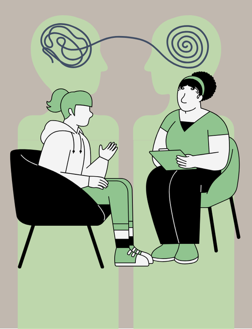

TERAPIA PSICOLÓGICA
La terapia psicológica o psicoterapia es una herramienta poderosa para el crecimiento personal y la sanación. La Lcda. Carla Alvarez ofrece un entorno seguro y de apoyo donde puedes explorar tus pensamientos, sentimientos y comportamientos.
A través de técnicas terapéuticas personalizadas, te ayuda a afrontar desafíos y descubrir las causas fundamentales de tu angustia. Ya sea que estés lidiando con ansiedad, depresión o problemas de relación, la terapia puede generar un cambio profundo. Experimenta el viaje hacia el autodescubrimiento y la resiliencia emocional, guiado por un profesional dedicado a tu bienestar. Da el primer paso hacia un futuro más brillante hoy mismo.
Ponte en contacto